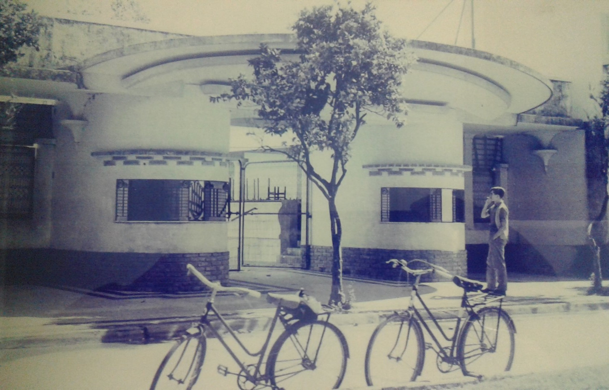
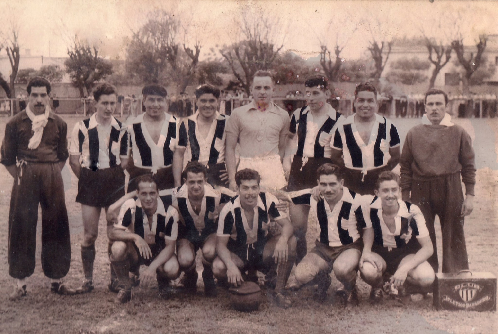
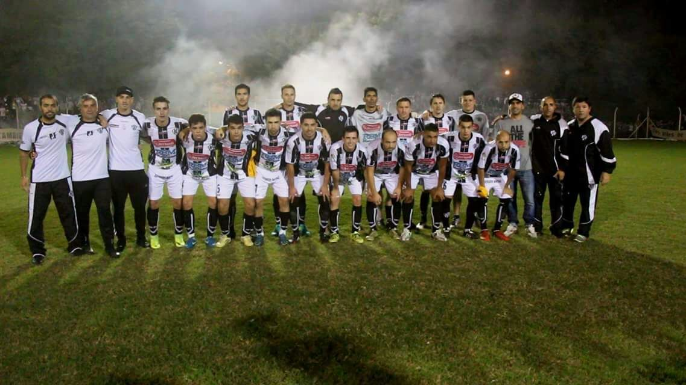
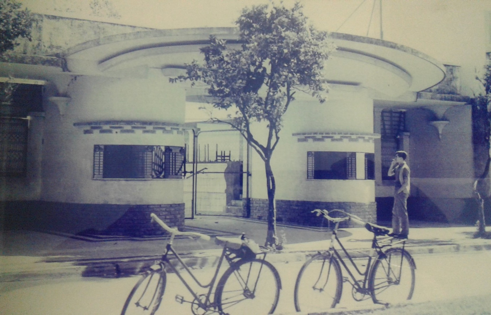
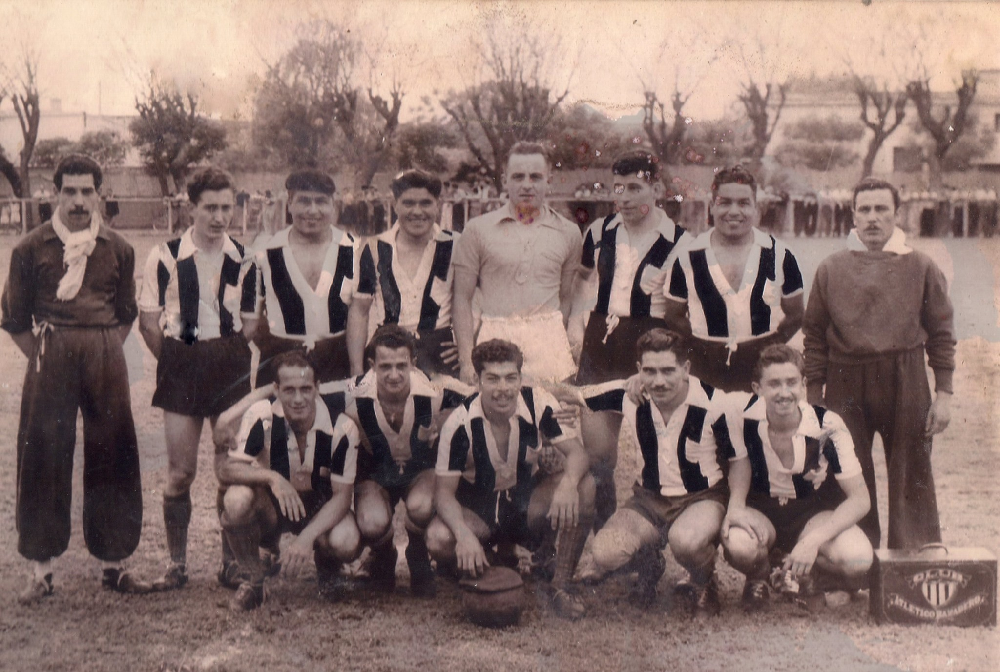
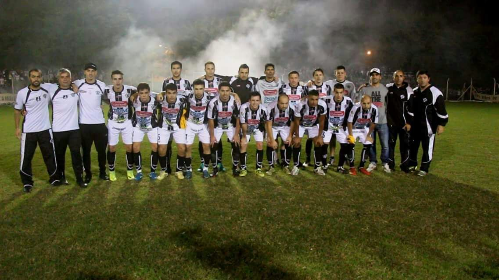

Historia
El Club Atlético Baradero es una entidad deportiva argentina con sede la ciudad de Baradero,
provincia de
Buenos Aires. Fue fundado el 3 de abril de 1905 con la finalidad de practicar fútbol en forma
organizada.
Sus fundadores fueron jóvenes que se mancomunaron para llevar a la realidad un sueño que tejieron en
un
banco de la Plaza Mitre en Baradero.Su primer presidente fue Alfredo Capellini, de 16 años, mientras
que
como socios fundadores y miembros de la comisión directiva provisoria se le sumaron Carlos L.
Bandinelli, Juan Airaldi, Francisco Mattig, José Fuccaraccio, Felipe Rosier, Luis Canis, Emilio
Ditarelli, Ismael Viademontes y Víctor Lacour, a los que debemos agregar a Don Antonio Barbich y
Pablo
Simenun Dieh, presidente y vicepresidente de la primera comisión directiva de 1905.
Primeros años
La primera cancha del club, hoy Estadio Carlos Asali, se inauguró el 10 de junio de 1906, cuando se
jugó el primer partido oficial contra White Star de Ramallo. El equipo de Baradero formó con los
siguientes jugadores: José Fuccaraccio, Rodolfo Frey, Antonio G. Barbich, Julio Bandinelli, Felipe
Rossier, Mario Genoud, Raúl Barrera, Alfredo Capellini, Raúl Frey, Pablo Simonin Dieh y Luis Canms.
También en 1906, el Atlético de aquel entonces enfrentó a un equipo capitalino denominado Nicolás
Avellaneda, en el cual militaban los hermanos José y Pedro Rithner. En el mes de abril de 1909 se
resolvió comprar alambre y postes para cercar la cancha, obra que se concretó el 9 de julio de ese
mismo año con su inauguración, disputándose un torneo atlético y adhiriéndose de esta manera el
club, a los festejos Patrios. Para ese entonces los socios del club pagaban una cuota de $1.- Bajo
el lema de "El deporte por el deporte mismo",[cita requerida] los jugadores de primera también
pagaban la misma cuota de los socios y eran responsables de comprar su propia equipación, mientras
que los de segunda pagaban 50 ctvos., cuota que aumentaba a $1 cuando ascendían a primera. Durante
los partidos jugados en los años 1908 y 1909 la base de la institución estuvo integrada por los
siguientes jugadores: H. Gallo, R. Degese, R. Ramírez, F. Luchini, A. Iparraguirre, P. Padròs, F.
Loforte, R. Bandenelli, E. García, R. Barrera, y P. Rithner.
En 1913, militando en la Federación de Fútbol del Norte (Zárate), Atlético se consagró campeón con
este plantel: R. Fernández, F. Loforte, A. Iparraguirre, A. Nocito, P. Rithner, F. Cavatorta, A.
Aldas, L. Ferreyra, P. Bandinelli (cap.), L. Rithner, A. Cabrera, L. Ocaranza, D. Muchari, A.
Jeanmaire, y E. Cánepa. En 1914 se inició la construcción de la actual casilla y vestuarios, que iba
a reemplazar a la pequeña que había sido construida por el señor don Pedro Rossier en 1905 al
iniciar las actividades. En enero, Atlético enfrentó en Zárate al Club Porteño a total beneficio de
la Federación de Fútbol del Norte y lo venció por 3 a 2. El 9 de julio se presentó el primer equipo
de Estudiantes de La Plata y venció a los locales por la mínima diferencia, 1 a 0. Con motivo de la
inauguración de la casilla y vestuarios se realizó un extraordinario programa de festejos el 11 de
octubre, y de nuevo el Club Porteño se presentó para engalanar las fiestas, enfrentando al primer
equipo de Atlético, al que derrotó por 2 a 1. Al día siguiente, 12 de octubre (Día de la Raza),
volvieron a encontrarse en la Plaza San Martín, y de nuevo los visitantes se impusieron, esta vez
por 3 a 0.
Visitas ilustres y el primer clásico
En 1924 llegó a Baradero la poderosa formación de Sportivo Barracas, en el que se desempeñaba
Roberto
Cherro, quien más adelante se convertiría en figura de Boca Juniors y a quien apodaban cariñosamente
"Cabecita de Oro" por sus famosos goles de cabeza. Atlético venció al visitante por 2 goles a 1. Ese
mismo año, otro grande del fútbol argentino, Boca Juniors, llegó a tierras baraderenses en vísperas
de
su partida hacia Europa. Se enfrentaron a Atlético, empatando en un gol.
En 1933, Atlético con su equipo denominado “A” se consagró campeón de la liga local. Integraron el
plantel los siguientes jugadores: Andrés Sosa, Ángel Giuffre, Héctor Veliz, Carlos Camocardi,
Pacífico
Morichelo, Ángel Silva, Roberto Véliz, Noel Moreyra, Raimundo Sosa, Aníbal Barman, Alfredo Retamar,
Emilio Romero, Eduardo Pocho Amartino, Héctor Cabrera, y Ángel Santagatti. Al año siguiente, 1934,
se
consagraron nuevamente campeones del torneo oficial de la liga local con este plantel: Oscar
Sprenger
(Cap.), Carlos Camocardi, José Pepe Manresa, América Genga, José Rodríguez, Humberto Giuffre, Carlos
Ferrera, Roberto Véliz, Mario Sprenger, Héctor Véliz, Armando Vilizio, Ángel Giuffre, Francisco
Pancho
Latorraga, Pascual Clérice, Victor J. Willi, Carlos Sprenger, Ricardo Rithner, y Pedro Tonini.
El 19 de marzo de 1935 inician las relaciones deportivas entre los dos principales equipos de
Baradero,
Atlético y Sportivo Baradero, luego de 12 años. Desde entonces, Atlético y Sportivo serían los
tradicionales adversarios del fútbol lugareño, dando ello a memorables encuentros. El primero, tiene
como fecha de realización el 30 de junio de 1923, en la cancha de Atletico, que como tantas veces se
vistió de gala para recibir a sus ex-compañeros y ex-socios, ahora como adversarios deportivos. La
seguidora hinchada albinegra colmó las instalaciones.
Actualidad
Actualmente el club desempeña actividades en las disciplinas de Futbol, Basquet, Voley, Karate y
Patin
Artistico.
En 2017, Atlético salió campeón del Torneo Federal C 2017, derrotando a Adip de Gonnet por 2-1 de
local
y perdiendo 1-0 en La Plata, tras lo cual "El Negro" ascendió por penales. Así, Atlético y
Sportivo
Baradero disputaron ambos uno de los torneos oficiales de las categorías de ascenso del fútbol
argentino, el Torneo Federal B 2017.
 




